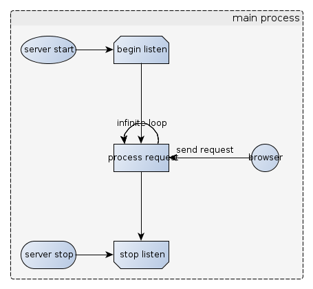
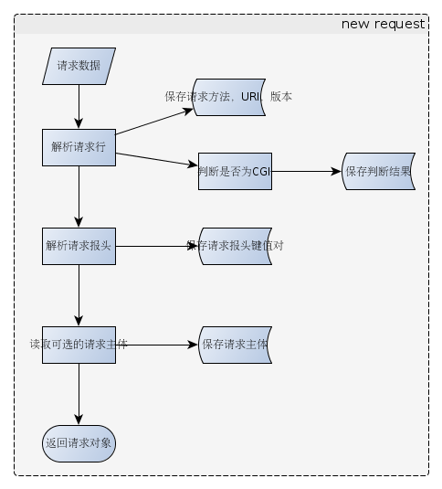
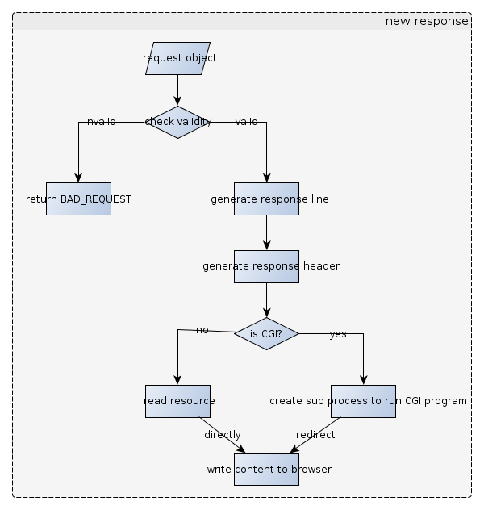

Tina is not
apache
Tina is just a personal challenge project for a job,here thanks to
Sangfor company(www.sangfor.com.cn).
Tina is designed to be a single-tasking HTTP server.it runs in a daemon
process,wait for the HTTP request,process the request and return response
info.This is show as the following figure.

When a web browser send a request.Tina create a new thread to process the
request with follow steps:
- read the request data.
- parse initial line info(such as request method,request URI and so on) and
save these info.
- parse request header and save these to header queue.
- try to read optional body content if need.
- return a new request object.
These can be show as follow figure.

After generate a new request object,new created thread will pass the request
object to create a new response object with follow steps:
- check the validity of the request.
- if it is a bad request
- just return BAD_REQUEST error message.
- if it is a valid request
- generate response line
- generate response header
- if it is a CGI request
- new a sub process to run CGI program,and write the output to the
browser by redirect.
- if it is not a CGI request
- read the request uri resource,write the content to the browser to
the browser directly
These can be show as follow figure.

After all steps before,Tina finished a browser request,and the new created
thread will be exit.
Tina run in a infinite loop to listen browser request and process as
before.
This is just a simple description about the simple Tina.
KISS,I think this is right.Thank you!
Last update: 1 May, 2012
MacKong